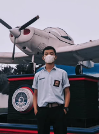

Halaman Utama
Data Diri

Chairul Ardana
Perkenalkan nama saya adalah Chairul Ardana, biasa dipanggil Chairul. Saya anak pertama dari 3 bersaudara. Saya lahir di Palembang pada 13 April 2006.
Perkenalkan nama saya adalah Chairul Ardana, biasa dipanggil Chairul. Saya anak pertama dari 3 bersaudara. Saya lahir di Palembang pada 13 April 2006.